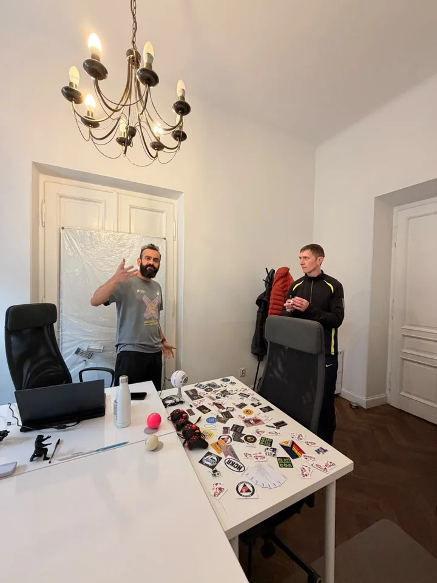
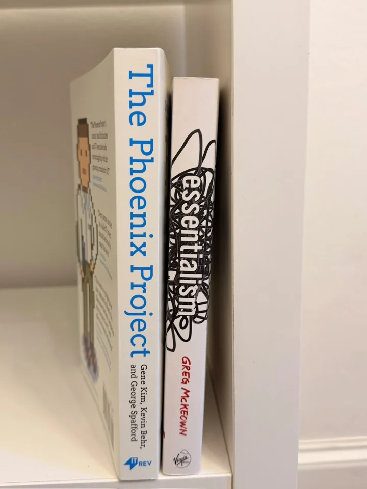
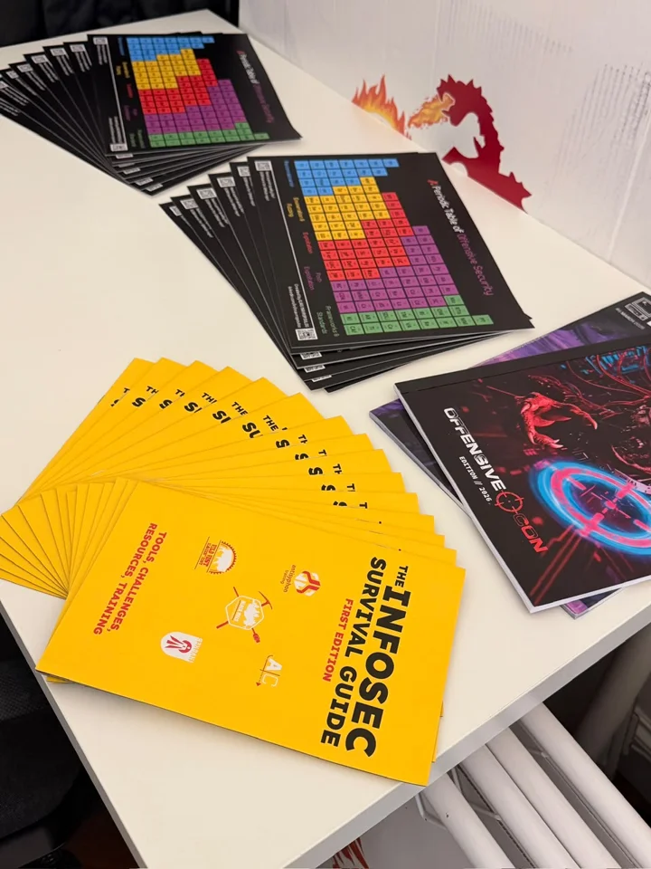

At the BSides Kraków Hacker Club, there are books you can borrow, security guides you can leaf through, and room to sit down with someone and work through a question together. Here’s a look at what’s taking shape at Św. Filipa 23 and how to get involved between meetups.
November’s meetup at the Club
On 25 November, the AI-SDLC meetup brought the BSides community to Św. Filipa 23. Rafaela Durlo covered how AI agents can help triage and fix security findings. Cássio Pereira shared community updates and discussed using AI for threat modelling. The evening also made time for people to catch up over drinks and snacks.
Download Cássio Pereira’s Threat Modeling with AI slides (PowerPoint).
Meetups give us a shared topic and an evening to talk about it. Having a room of our own gives those conversations somewhere to continue. If you leave an event with a book recommendation, a game you’d like to try, or an idea you want to work on with someone, the Club gives you a place to pick it back up.

What’s already taking shape beyond the meetup
A lending library. The shelf already includes books such as The Phoenix Project. Each book has a QR label you can scan to borrow or return it. If you’re at the Club and something catches your eye, you can take it home and bring it back for the next reader.
Resources to explore together. The shared table has copies of The Infosec Survival Guide and other security publications. Pick one up, compare notes with someone or bring a resource you’ve found useful. If you’d like to run a security tabletop game or a reading group, those are also good ideas to bring to the Club.


Help shape what happens next
The community project board is open for ideas. A programmable electronic badge and 3D-printing workshops are among the proposals you can discuss. You can also suggest a project of your own or offer to help with an existing one.
The Club welcomes students, developers, researchers, security practitioners and anyone curious about the field. You can share a book recommendation, bring an idea for a small group session or help someone get started with a tool you know well.